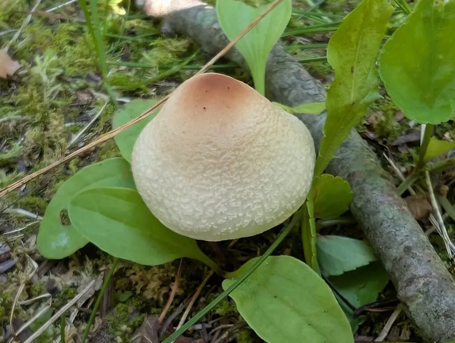

真菌 · 真菌界
冠环柄菇 Lepiota cristata

蘑菇科小型蘑菇，菌盖白底带红褐同心鳞片、气味刺鼻，属有毒菌，误食可致剧烈呕吐腹泻，禁止采食。
- 分类
- 门担子菌门纲伞菌纲目伞菌目科蘑菇科属环柄菇属
- 栖息环境
- 草地、林缘、菜园与堆肥处，夏秋成群发生
- 地理分布
- 北半球温带广布，中国南北各地及欧洲、北美常见
- 保护级别
- 暂无评估；种群稳定
物种志
冠环柄菇的子实体小型，菌盖直径 2–5 厘米，初期钟形，后平展，中央凸起呈深红褐色，向边缘渐变为白色并散布红褐色同心鳞片，边缘有白色菌幕残片。菌肉白色，薄，气味刺鼻带橡胶或墨水味。菌褶白色，离生，密集。菌柄长 3–6 厘米，直径 0.3–0.6 厘米，白色至淡粉，具易脱落的白色菌环。孢子印白色。
冠环柄菇生于草地、林缘、菜园与堆肥处，夏秋成群发生。它是有毒菌，含肽类毒素与胃肠道刺激成分，误食后数小时出现恶心、呕吐、腹痛、腹泻，严重者可致脱水；因其个体小、易与可食的小型蘑菇混淆，是欧美常见的误食中毒种类。环柄菇属中还有含鹅膏毒肽的剧毒种类（如肉褐鳞环柄菇），因此该属的小型蘑菇应一律不采食。
形态与习性
- 菌盖直径 2–5 厘米，白底带红褐同心鳞片
- 菌褶白色，离生，密集
- 菌柄长 3–6 厘米，具易脱落的白色菌环
- 孢子印白色，孢子椭圆形
- 生境草地、林缘与堆肥处，夏秋成群
- 毒性有毒，误食致呕吐腹泻，禁止采食
趣味知识
- 冠环柄菇菌盖中央深红褐、向边缘渐白并带同心鳞片，像一顶小冠冕。
- 它闻起来有刺鼻的橡胶或墨水味，这是环柄菇属许多有毒种类的共同气味。
- 同属的肉褐鳞环柄菇含鹅膏毒肽，可致肝衰竭，因此小型环柄菇一律不采。
- 误食后症状多在数小时内出现，以剧烈呕吐腹泻为主，儿童尤其危险。